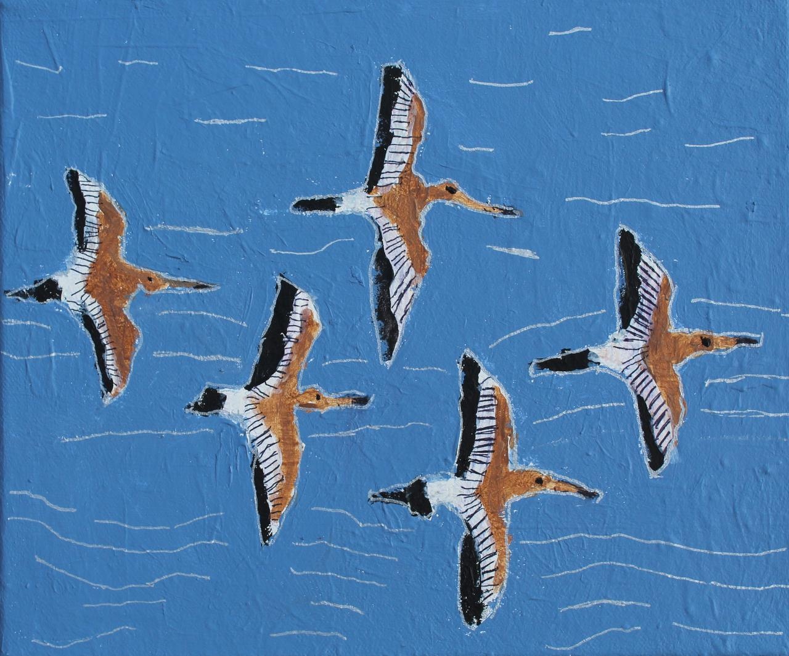

Expositie De Kunstgreep 12 januari tot 7 april 2019
De tentoonstelling die gepland stond tot 10 maart wordt verlengd tot en met 7 april.
Met de expositie “De Kunstgreep” opent het Mienskipshûs Doarpstsjerke Metslawier het jaar 2019.
Het Mienskipshûs biedt een podium aan kunstenaars die verbonden zijn aan de streek en deze expositie past hier goed bij. De expositie is vanaf 12 januari t/m 7 april vrij te bezichtigen tijdens de openingstijden elke zaterdag en zondag tussen 13:30 en 17 uur.
De Kunstgreep is een dagbestedingslocatie van zorgorganisatie Wil. Mensen met een ondersteuningsvraag maken er bijzondere en kleurrijke werken. Het atelier is te vinden in Dokkum. Er wordt geschilderd en getekend onder deskundige begeleiding in combinatie met andere technieken. De kunstenaars werken op groot en klein formaat, op papier en op doek. De onderwerpen variëren van landschappen tot portretten.
Op de foto ‘Vlucht Weidevogels” gemaakt door Ivonne Venis (acrylverf op doek) Ivonne haar favoriete onderwerp zijn vogels. Als huisdier heeft ze een parkiet en deze is vaak in verf verbeeld. ‘De weidevogels’ is ontstaan n.a.v. een serie in een tijdschrift over de bedreigde weidevogels in Friesland. Voor Ivonne een mooi onderwerp om over te schilderen.
In onze doarpstsjerke wordt een deel van de ondertussen omvangrijke collectie geëxposeerd. De werken zijn te huur of te koop.
.jpg)